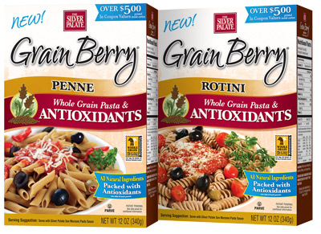

Product information
- Category: Grain Berry Cereals
- Name: Grain Berry Penne
- Name: Grain Berry Rotini
- Shop Online: shophttps://shop.silverpalate.com/
Product detail
Pasta is versatile, tasty and quick & easy to make. But as a rule; most pasta is made with processed wheat; empty carbs that fill you up but add little to your good health. Grain Berry Penne and Rotini are the exceptions to that rule. First, they’re made with the finest Whole Durum Wheat & Whole Semolina Wheat. These Whole Wheat varieties are grown specifically for pasta, and retain all the healthy micro-nutrients that other pastas leave out. To these 2 pure, simple ingredients we add Grain Berry Hi-Tannin Bran from the ancient grain sorghum. Our Bran is packed with free radical fighting antioxidants and slower digesting carbs for sustained energy and weight management. Now that’s al dente!